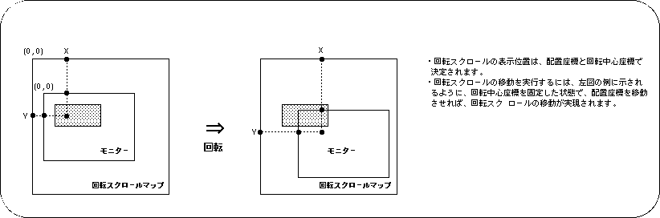

Return to previous page | Return to menu ｜ Go to next page
The scrolling screen “RBG0” can be scaled and rotated.
In addition, although the concept is different from normal scrolling, you can also move the scroll vertically and horizontally.
Here, we will explain the movement, enlargement / reduction, and rotation functions of the rotating scroll along with the sample program.
The movement of the rotary scroll is actually realized as a change of the scroll display position. By using the function “slLookR”, you can make the scroll appear to move up, down, left and right with respect to the monitor.
